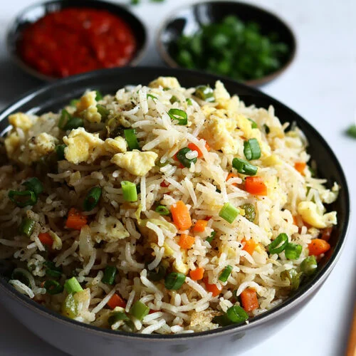

Fried Rice

Description
Fried rice is a popular Nigerian dish made with rice, vegetables, seasoning,and protein. It is delicious and commonly served at parties and family gatherings.
Ingredients
- Rice
- Carrots
- Green beans
- Sweet corn
- Chicken
- Seasoning cubes
- vegetable oil
Steps
- Wash and cook the rice.
- Prepare the vegetables and chicken.
- Fry the vegetables with seasoning.
- Add the cooked rice and mix everything together.
- Cook for a few minutes and serve.
Home